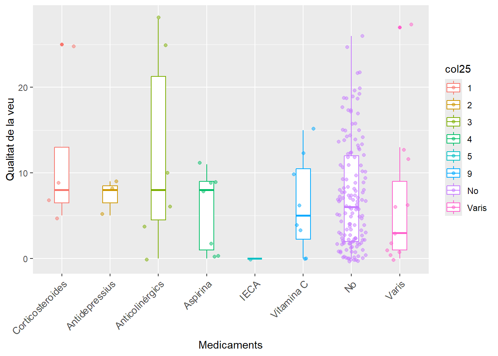
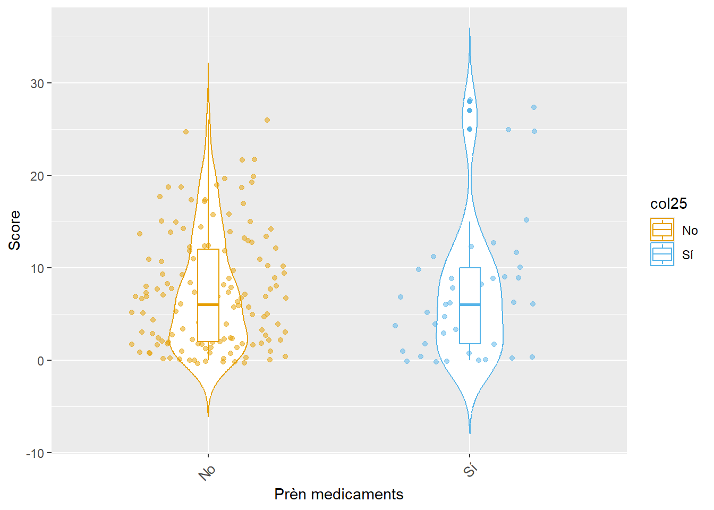
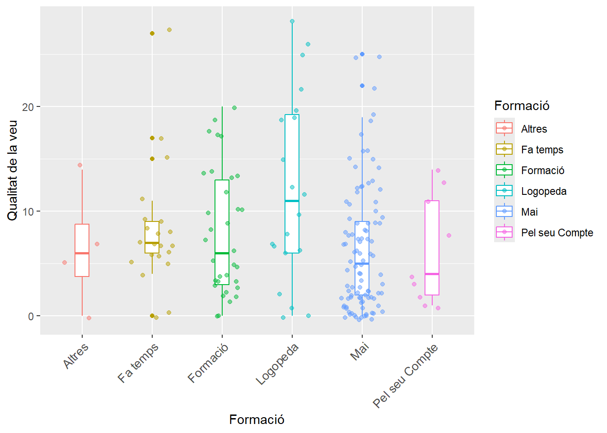

El problema general és si la Formació en veu influeix en la percepció de la mateixa.
A més, nosaltres ens plantegem la pregunta “Afecta el consum de medicaments a la qualitat de veu dels professors?”. Veurem que cap dels medicaments consumits pels docents té una mitjana significativament diferent de cap altre. I d’entre els que consumeixen medicaments i els que no ho fan, tampoc NO hi ha diferències importants. És a dir, veim que no hi ha una relació clara entre el consum de medicaments i la qualitat de la veu dels docents.
Plantejament del problema
La qualitat de la veu dels docents està avaluada en 10 preguntes amb possibles respostes: “Mai”, “Gairebé Mai”, “A vegades,”Gairebé Sempre” i “Sempre”. Ho plantejam de la següent manera. A cadascun d’aquestes situacions li assignem un valor numèric natural del 0 al 4, llavors crearem una nova variable: “Score” que prendrà valors entre 0-40 i serà el nostre indicador de qualitat de veu sobre el qual farem feina. A major ‘score’, menor qualitat de veu i viceversa.
Anàlisi descriptiu de la base de dades
Feim un petit anàlisi descriptiu de la base de dades: Tenim un dataset amb 185 observacions, això és, 185 docents sotmesos al qüestionari. Amb 38 preguntes obtenim 38 variables, gairebé totes qualitatives excepte l’edat, que és numèrica. Aquí podem visualitzar les dades originals:
head(dat)
# A tibble: 6 × 38
ID De l'1 al 10 quina importancia té la…¹ Sexe `On fa feina?` `Cos docent`
<dbl> <dbl> <chr> <chr> <chr>
1 1 10 Feme… Palma, Llucma… Formació Pr…
2 2 10 Feme… Palma, Llucma… Educació Se…
3 3 10 Masc… Inca, Sa Pobl… Educació Se…
4 4 10 Feme… Palma, Llucma… Educació Se…
5 5 10 Feme… Palma, Llucma… Educació Se…
6 6 10 Feme… Palma, Llucma… Educació Se…
# ℹ abbreviated name: ¹`De l'1 al 10 quina importancia té la veu per a vostè?`
# ℹ 33 more variables: `Quina edat té?` <chr>,
# `Practica esport o fa alguna activitat física?` <chr>,
# `De l'1 al 10 quina importancia té la pràctica de l'esport o activitat física per a vostè?` <dbl>,
# `Té una bona qualitat del son?` <chr>, `Consumeix cafè?` <chr>,
# `Consumeix tabac?` <chr>, `Consumeix alcohol?` <chr>,
# `Consumeix begudes amb gas?` <chr>, …
Respondre preguntes
El consum de medicaments afecta la qualitat de la nostra veu?
Per respondre les preguntes haurem d’analitzar les variables que ens interessin. Farem un primer anàlisis amb la pregunta número 25: Pren alguna o algunes de les medicacions següents? On les possibilitats són:
És important assenyalar que, d’entre els enquestats, no hi ha CAP consumidor de “Diurètics”, “L-Dopa” i de “Danazol”. Per tant, aquestes variables no apareixeran en el boxplot que contrasta medicaments i qualitat de veu:

A partir d’aquí, cal plantejar-se si les diferents mitjanes de qualitat de veu dels diferents factors són significativament diferents. Ens plantegem la hipòtesi nul·la de què totes les mitjanes són iguals, que només podríem rebutjar si trobássim un p-valor del test de Variànces ANOVA inferior al 0.05
summary(aov(qualitat_veu~col25, data=dat_graf_2))
Df Sum Sq Mean Sq F value Pr(>F)
col25 7 302 43.16 1.023 0.417
Residuals 177 7467 42.19
Hem obtingut un p-valor del 0.417 i, per tant NO podem rebutjar la hipòtesi nul·la. No podem dir que el conusm d’algun dels medicaments influeixi en la qualitat de la veu més que qualsevol altre. Però sí que podem considerar una agrupació diferent dels factors. A partir d’ara, només compararem els que sí han consumit medicaments amb els que no ho han fet. Passam a tenir dos factors:

A simple vista ja és veu que no hi ha una gran diferència entre les mitjanes d’ambdós factors. Si plantejàssim un ANOVA entre els dos factors amb hipòtesi nul·la la igualtat entre mitjanes, el resultat seria molt clar:
summary(aov(qualitat_veu~col25, data=dat_graf3))
Df Sum Sq Mean Sq F value Pr(>F)
col25 1 1 0.60 0.014 0.905
Residuals 183 7768 42.45
Efectivament, amb un p-valor de 0.905 no té gaire sentit rebutjar la hipòtesi nul·la.
Pregunta general: la formació en veu influeix en la percepció de la mateixa?
Aquí considerarem que la percepció de la qualitat de la mateixa ve donada per l’score. I la variable qualitativa “Formació en veu” vendrà donada per la pregunta 24: “Té formació sobre salut vocal?” on les possibles respostes són:
New names:
Rows: 185 Columns: 38
── Column specification
──────────────────────────────────────────────────────── Delimiter: ";" chr
(33): Sexe, On fa feina?, Cos docent, Quina edat té?, Practica esport o ... dbl
(4): ID, De l'1 al 10 quina importancia té la veu per a vostè?, De l'1 ... lgl
(1): ...38
ℹ Use `spec()` to retrieve the full column specification for this data. ℹ
Specify the column types or set `show_col_types = FALSE` to quiet this message.
• `` -> `...38`
[1] "Formació" "Qualitat"

Feim un ANOVA:
summary(aov(Qualitat~Formació, data=dat_gen))
Df Sum Sq Mean Sq F value Pr(>F)
Formació 5 642 128.40 3.225 0.00819 **
Residuals 179 7127 39.82
---
Signif. codes: 0 '***' 0.001 '**' 0.01 '*' 0.05 '.' 0.1 ' ' 1
Ara sí, veiem com hem trobat un p-valor de 0.00819 per al test de variàncies. Com el p-valor és INFERIOR al llindar estàndard de 0.05, ens podem plantejar de REBUTJAR la hipòtesi nul·la. És a dir, hi ha un factor amb tendència mitjana diferent als altres. El que NO ens diu el test ANOVA és quin parell de grups presenten aquesta disparitat. Per a comparar parelles de mitjanes, la teoria diu que aquestes han de seguir una distribució de NORMALITAT. Llavors hem de comprovar aquesta condició i, ho podem fer amb els tests de KOLMOGOROV-SMIRNOV o el de ANDERSON-DARLING:
lillie.test(d2)
Lilliefors (Kolmogorov-Smirnov) normality test
data: d2
D = 0.12687, p-value = 1.128e-07
ad.test(d2)
Anderson-Darling normality test
data: d2
A = 4.7218, p-value = 9.726e-12
Veiem que ambdós tests donen un p-valor molt per DAMUNT de 0.05, que és el nostre llindar de significació. Llavors hem de rebutjar a priori la idea de que segueixen una distribució normal. No obstant, això, la nostra mostra és de 185 individus, és a dir, és considerada una mostra gran (<30 individus). Aleshores el Teorema Central del Límit ens suggereix que, amb mostres d’aquest tamany, la desviació amb respecte la normalitat la podem despreciar. És a dir, podem fer tests per parelles que requereixen la hipòtesi de Normalitat. Farem aleshores un test per parelles de Holm:
Per ara hem pogut fer això, voldriem canviar els noms a parte de explicar todo el código que hemos hecho. Varem perdre molt de temps en consegguir el score. Després per cada medicament voliem mirar el score i fer una comparació, però com podem observar amb els punts vermells hi ha una major densitat en una resposta i en la resta poca i pentura és precipitat treure conclussions.